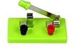

Interruptores
-
Os interruptores são componentes eletrónicos fundamentais para controlar o fluxo de corrente elétrica num circuito, podendo abrir ou fechar o circuito manualmente ou automaticamente.
- Interruptores de Alavanca
- Interruptor de Alavanca Simples (Single Pole Single Throw, SPST): Possui uma única posição de ligação e desligamento. Utilizado em aplicações simples de ligar/desligar.
- Interruptor de Alavanca Duplo (Double Pole Single Throw, DPST): Pode controlar dois circuitos independentes simultaneamente.
- Interruptor de Alavanca Múltipla (Single Pole Double Throw, SPDT): Pode direcionar a corrente para uma de duas saídas diferentes.
- Interruptores de Botão
- Interruptor de Botão Momentâneo (Push Button Switch): Ativa o circuito apenas enquanto o botão é pressionado. Comum em campainhas e teclados.
- Interruptor de Botão Travado (Latching Push Button Switch): Mantém a posição até que seja pressionado novamente para alterar o estado.
- Interruptores de Chave Rotativa
- Interruptor Rotativo: Seleciona diferentes circuitos ou estados girando uma chave. Utilizado em seletores de canais, controladores de volume e temporizadores.
- Interruptores Deslizantes
- Interruptor Deslizante (Slide Switch): Alteração do estado do circuito ao deslizar o interruptor. Comum em brinquedos e dispositivos portáteis.
- Interruptores de Balanço
- Interruptor de Balanço (Toggle Switch): Usa uma alavanca que balança para alternar entre posições de ligado e desligado.
- Interruptores de Pressão
- Interruptor de Pressão (Pressure Switch): Ativado pela mudança de pressão num sistema. Usado em sistemas hidráulicos e pneumáticos.
- Interruptores de Proximidade
- Interruptor de Proximidade (Proximity Switch): Detecta a presença de um objeto sem contato físico. Utilizado em sensores automáticos, como em portas automáticas.
- Interruptores de Inclinação
- Interruptor de Inclinação (Tilt Switch): Ativado quando a posição do interruptor é inclinada além de um certo ângulo. Comum em alarmes e dispositivos de segurança.
- Interruptores de Mercúrio
- Interruptor de Mercúrio (Mercury Switch): Utiliza uma pequena quantidade de mercúrio num tubo selado que se desloca para fazer ou quebrar o circuito. Comum em termostatos antigos.
- Interruptores Magneto-Reed
- Interruptor Reed (Reed Switch): Ativado por um campo magnético. Usado em sensores de portas e janelas.
- Interruptores de Temperatura
- Termostato: Ativado pela mudança de temperatura. Usado em sistemas de aquecimento e refrigeração.
- Interruptores de Luz
- Interruptor Fotoelétrico (Photoelectric Switch): Ativado pela luz, utilizado em sistemas de iluminação automática e sensores de presença.
- Interruptores de Flutuação
- Interruptor de Flutuação (Float Switch): Ativado pelo nível de líquido. Utilizado em sistemas de controle de nível de água.
- Interruptores de Fim de Curso
- Interruptor de Fim de Curso (Limit Switch): Ativado quando uma máquina ou parte móvel atinge uma posição específica. Usado em máquinas industriais e robótica.
- Interruptores Tácteis
- Interruptor Táctil (Tactile Switch): Ativado por pressão leve e oferece feedback táctil. Usado em teclados e painéis de controle.
- Interruptores de Pé
- Interruptor de Pé (Foot Switch): Operado com o pé, comum em ferramentas elétricas e máquinas industriais.